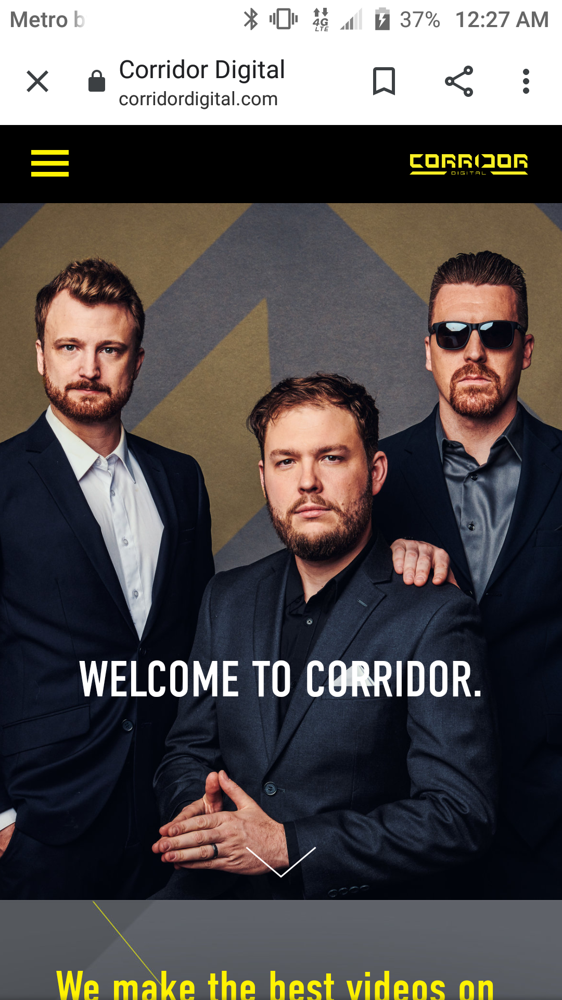
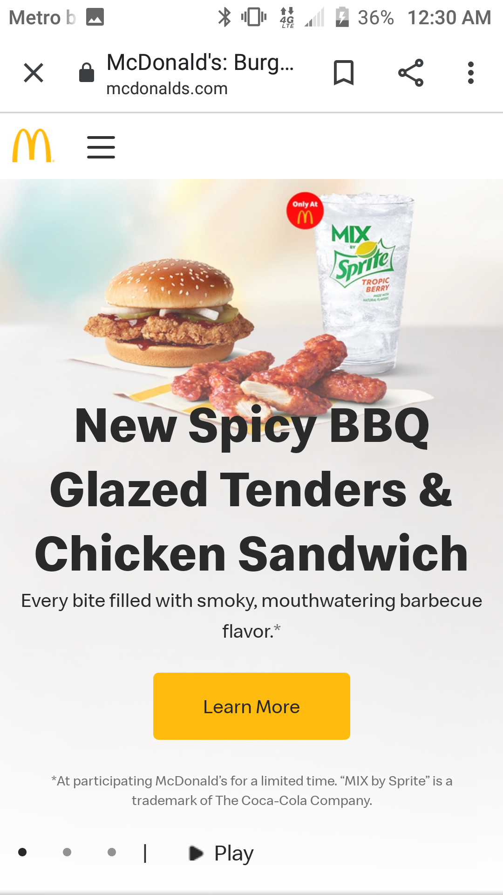
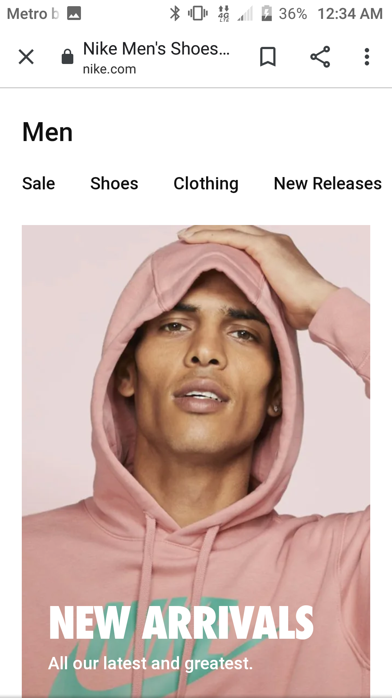

Gestatt Design
corridordigital
Corridor digital This website mobile layout really implements the Gestatt Design because when you first look at the site you don't really notice the header or the tab. The creators made sure that the user could see their work and portfolio on the homepage before they start navigate throughout their website. Notice how the tabs and company's name are so much smaller than the rest of the elements on the page.
White Space and Clean Design
Mcdonalds
mcdonalds Mcdonalds does a great job displaying the white space and clean design because they have a lot of white space filling up the screen everywhere! The texts, images and buttons are all surrounded by white space which really makes the imformation on the page easy to read and user friendly. Also shows a great job at showing which elements are more important than the others. The faded out image is overlayed by big black text and then your eye is guided to the yellow button. Very effective for consumers.
Occams Razor
Nike
Nike Store The Nike store layout does a very good job at showcasing how to utilize the Occam's Razor effect. The interface is very simple and basic. You don't have to spend a lot of time to look around the page for the imformation you need. The tabs are centered and easy to view and the main images are clear on the page.